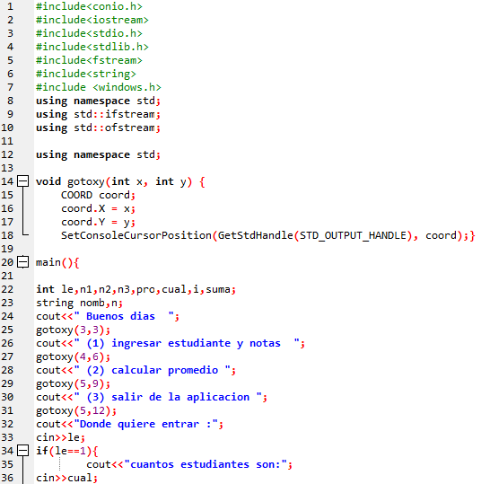
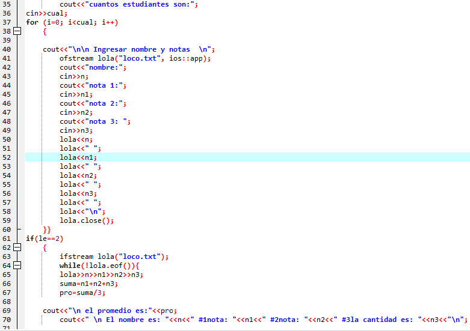
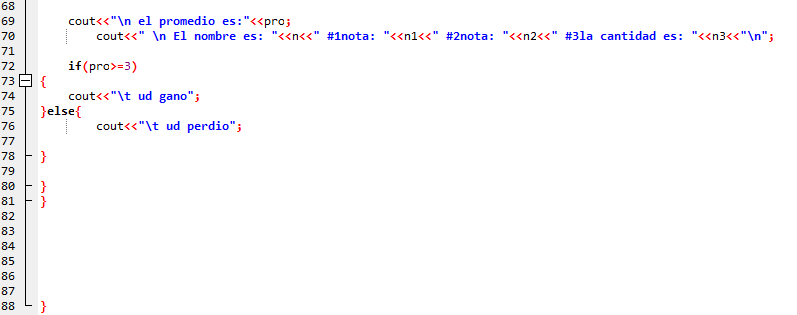

| |



opinión
los trabajos de c++ son un poco dificiles pero siempre intento hacerlos de la forma mas adecuada pero cada uno de los trabajos son buenos y nos permiten aprender mas sobre c++ y poner nuestros conocimientos a prueba para poder mirar nuestras falencias y poder mirar en que fallamos y posteriormente corregirlos